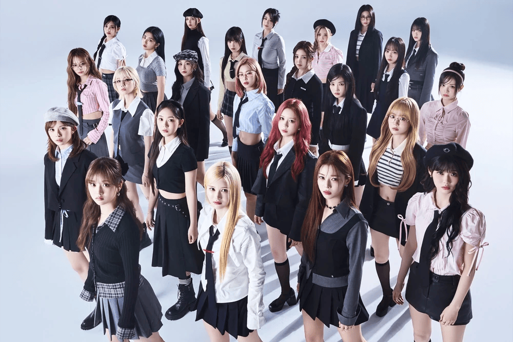

Who is tripleS?
tripleS is an innovative 24-member South Korean girl group created by Modhaus, led by CEO Jaden Jeong. The group revolutionizes the industry through a decentralized structure where the members are revealed sequentially (from S1 to S24) and organized into special sub-units called "DIMENSIONS". Through the official application Cosmo, fans (known as WAV) use digital voting governance tokens called "Como" to determine everything from sub-unit lineups to official title tracks.

Group Photo: tripleS pushing the boundaries of K-pop.
The tripleS Ecosystem
The operational logic of tripleS centers around several distinct fan-driven and conceptual mechanisms:
- The S System: Each member is designated an 'S' number (S1 through S24) corresponding to the chronological order of their public unveiling.
- Gravity Voting: Fan-directed voting events hosted on the Cosmo application where strategic structural decisions are determined by the community.
- Cosmo & Digital Objekts: A unique framework utilizing digital and physical photocard collections (Objekts) that generate the voting power necessary to alter dimensions.
- Diverse Sub-Units: Dynamically generated groups including Acid Angel from Asia, +(KR)ystal Eyes, LOVElution, EVOLution, Aria, and Visionary Vision.
Member Profiles (S1 - S24)
Below is the structured registry of all twenty-four members in order of their official debut revelation:
| ID | Name | Birth Name | Nationality | Official Concept Color |
|---|---|---|---|---|
| S1 | Yoon SeoYeon | 윤서연 | South Korea | Dodger Blue |
| S2 | Jeong HyeRin | 정혜린 | South Korea | Electric Purple |
| S3 | Lee JiWoo | 이지우 | South Korea | Lemon Yellow |
| S4 | Kim ChaeYeon | 김채연 | South Korea | Atlantis Green |
| S5 | Kim YooYeon | 김유연 | South Korea | Opera Pink |
| S6 | Kim SooMin | 김수민 | South Korea | Mauvelous |
| S7 | Kim NaKyoung | 김나경 | South Korea | Cadet Blue |
| S8 | Gong YuBin | 공유빈 | South Korea | Misty Rose |
| S9 | Kaede | 山田楓 | Japan | inversion style applied to light colors for contrast -->Sunglow Yellow |
| S10 | Seo DaHyun | 서다현 | South Korea | Lavender Rose |
| S11 | Kotone | 嘉味元 琴音 | Japan | Golden Yellow |
| S12 | Kwak YeonJi | 곽연지 | South Korea | Royal Blue |
| S13 | Nien | 許念慈 | Taiwan / Vietnam | Neon Carrot |
| S14 | Park SoHyun | 박소현 | South Korea | Egyptian Blue |
| S15 | Xinyu | 周心语 | China | Venetian Red |
| S16 | Mayu | 髙麗 真友 | Japan | Vivid Tangerine |
| S17 | Lynn | 川上凜 | Japan | Violet Blue |
| S18 | JooBin | 주빈 | South Korea | Conifer |
| S19 | Jeong HaYeon | 정하연 | South Korea | Medium Turquoise |
| S20 | Park ShiOn | 박시온 | South Korea | Violet Red |
| S21 | Kim ChaeWon | 김채원 | South Korea | Light Wisteria |
| S22 | Sullin | พิรดา บุญรักษา | Thailand | Dark Sea Green |
| S23 | SeoAh | 정해린 | South Korea | Light Cyan |
| S24 | JiYeon | 지서연 | South Korea | Rajah Orange |
Official Discography Timeline
Because tripleS relies on a decentralized concept, albums are released by either the full group or distinct, temporary sub-units (Dimensions). Here is their official chronological release order:
| Release Year | Album Title | Type | Group / Sub-Unit Name | Lead Title Track |
|---|---|---|---|---|
| 2022 | Access | Mini Album (EP) | Acid Angel from Asia (AAA) | Generation |
| 2023 | Assemble | Mini Album (EP) | tripleS OT10 | Rising |
| 2023 | Aesthetic | Mini Album (EP) | +(KR)ystal Eyes (KRE) | Cherry Talk |
| 2023 | Acid Eyes (Cherry Gene) | Single Album | ACID EYES (AAA + KRE Mashup) | Cherry Gene |
| 2023 | ↀ (MuHan) | Mini Album (EP) | LOVElution | Girls' Capitalism |
| 2023 | ⟡ (MuJuk) | Mini Album (EP) | EVOLution | Invincible |
| 2024 | Structure of Sadness | Single Album | Aria (Ballad Unit) | Door |
| 2024 | ASSEMBLE24 | Full Studio Album | tripleS (First Full 24-Member Album) | Girls Never Die |
| 2024 | Performante | Full Studio Album | Visionary Vision (VV / Dance Unit) | Hit The Floor |
| 2025 | ASSEMBLE25 | Full Studio Album | tripleS (Full 24-Member Return) | Are You Alive |
| 2025 | SecretHimitsuBimil | Japan Debut Mini Album | tripleS hatch! | Password |
| 2025 | Beyond Beauty | Mini Album (EP) | tripleS msnz | Christmas Alone |
| 2026 | LOVE & POP | 3-Part Album | tripleS (Full 24-Member Return) | Baby Flower |